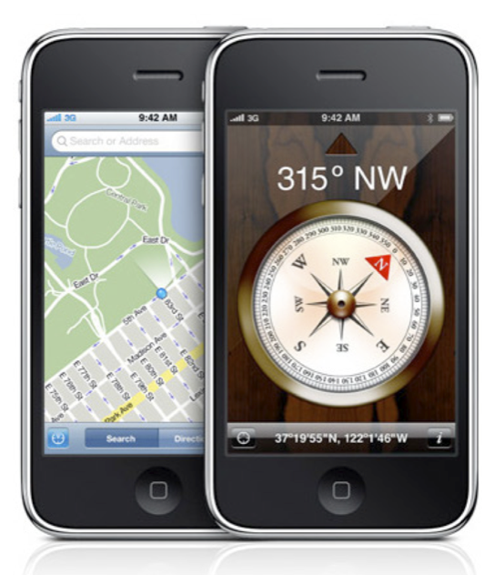
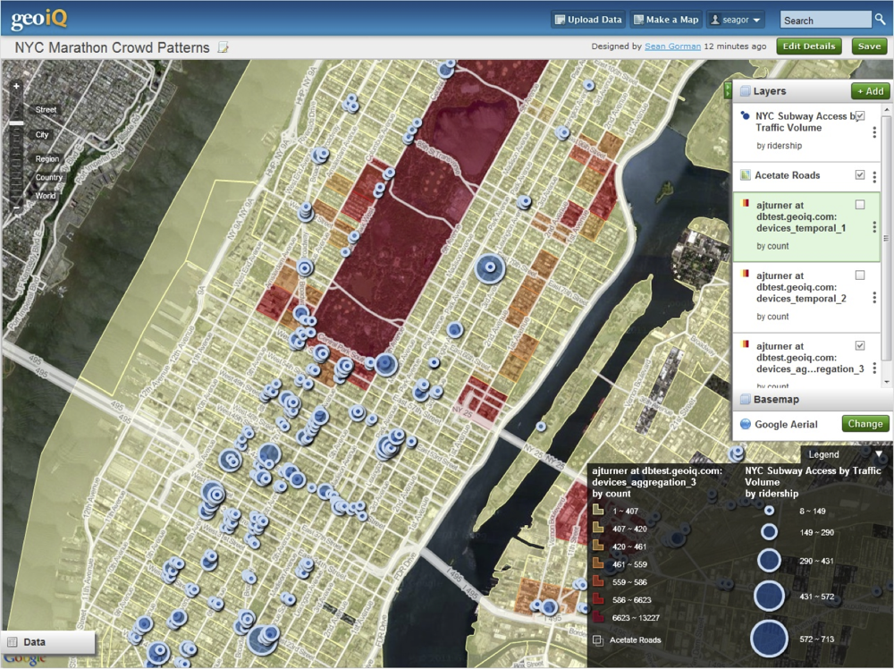

Opportunities & Challenges in Geospatial Industry
Andrew Turner - @ajturner
slides:
heorb.it/esrifuturegis
'spacebar' to advance
's' to show notes
'f' for fullscreen
Digital GIS
Composite Map Projection
Mobile & Contextual

Collaborative & Social
Big
Data
Big
Data
Volume
Variety
Velocity
Noise to Signal
Statistical Mechanics
Community Detection
Realtime, Dynamic Data
New York City Marathon

Thank you
Andrew Turner
aturner@esri.com